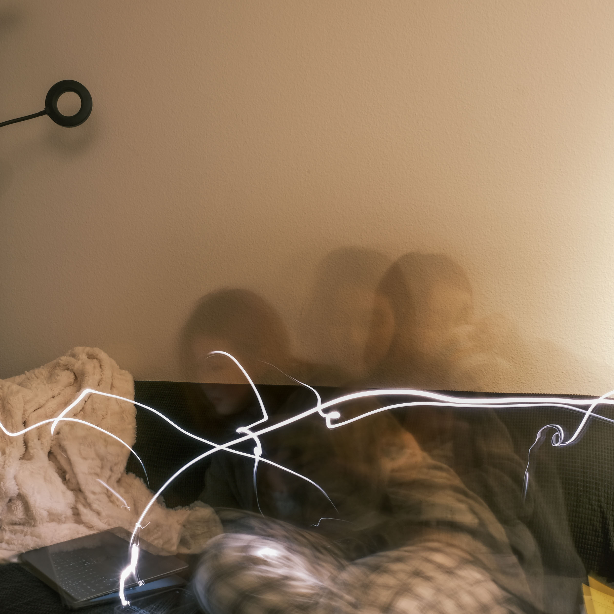
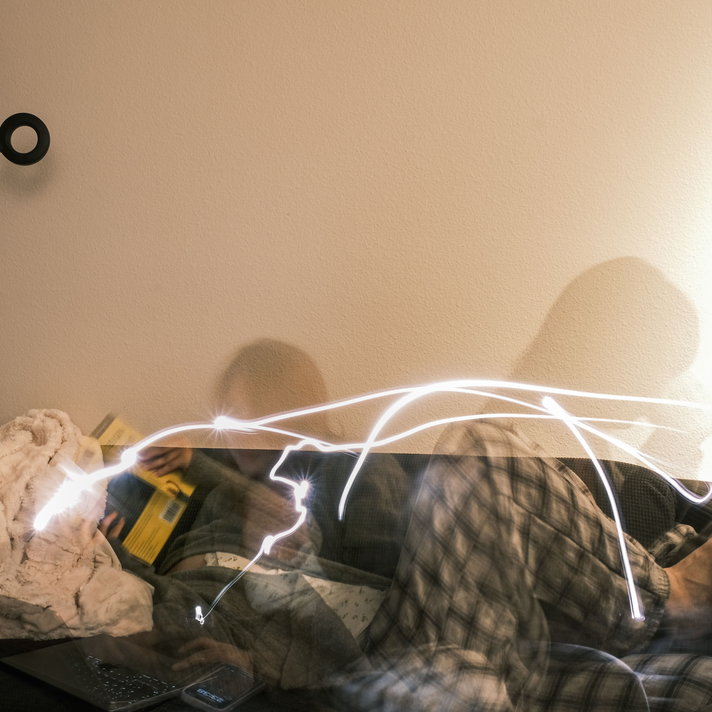
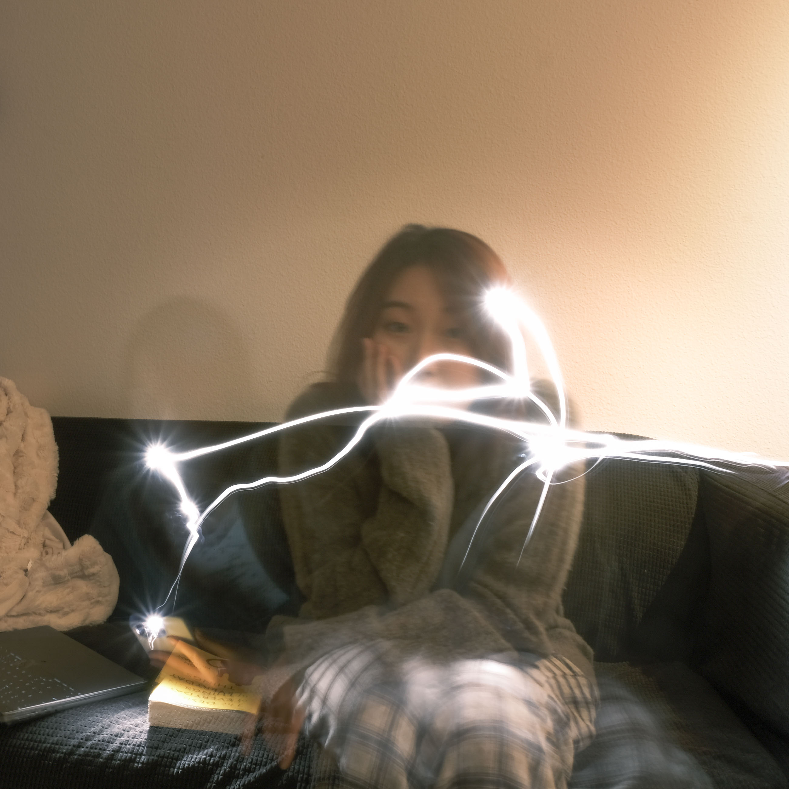
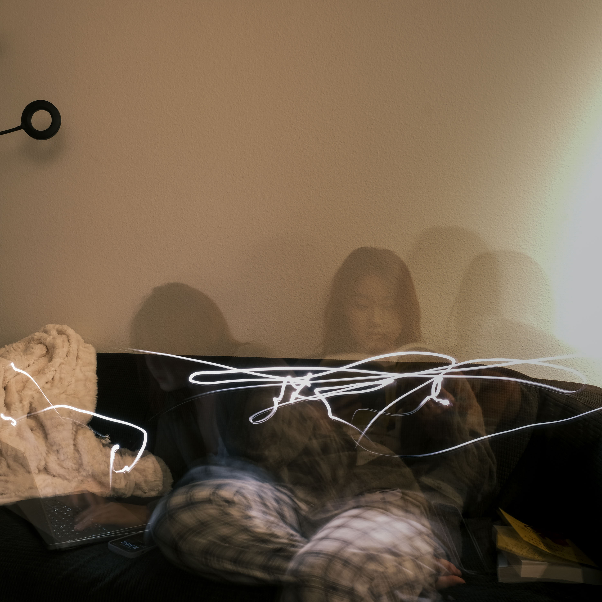
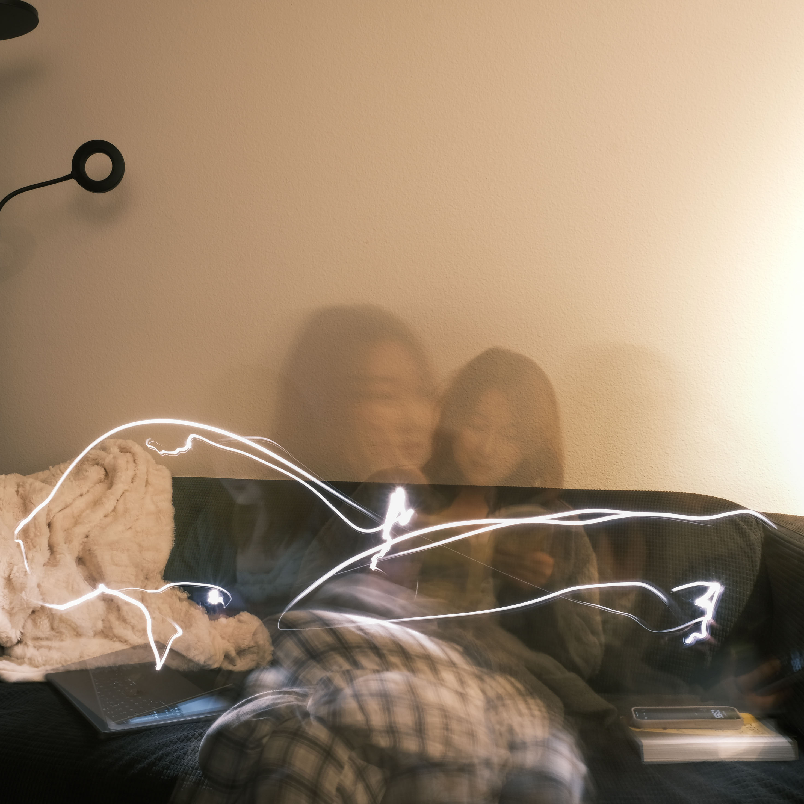
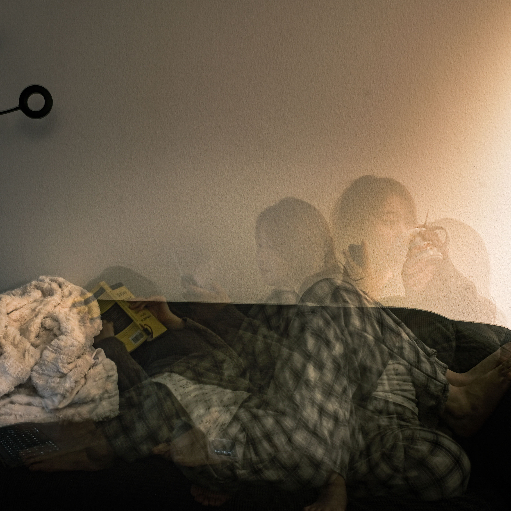

2025
The Sofa and I
Long Exposure Portrait
This portrait series was created through numerous experiments with long exposure techniques. I began by researching how camera exposure works — the relationship between shutter speed, aperture, and ISO. Understanding these foundations helped me control the way motion appears in the frame.
I tested a variety of settings, lighting conditions, and movements — from quick gestures to slow head turns — in order to explore different levels of blur, contrast, and ghostly presence. Some images emphasized clarity fading into fog, while others captured layered time and gesture.
After many iterations, I found a visual language that felt right to me: expressive, temporal, and slightly surreal — a reflection of memory in motion. The resulting images are not just portraits, but traces of embodied time.

Long Exposure Study

The Series




